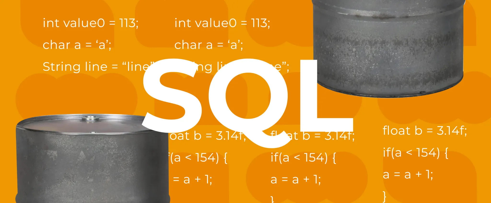
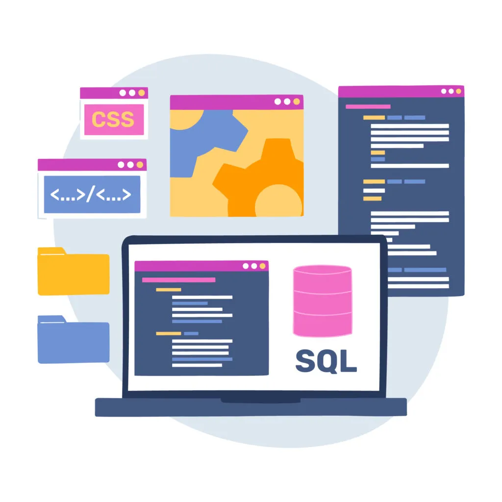

SQL o Lenguaje de Consulta Estructurado es un lenguaje de programación utilizado para acceder y manipular bases de datos relacionales.
ANSI (American National Standards Institute) lo certificó en 1986 y desde entonces se ha vuelto indispensable para las empresas que trabajan con grandes cantidades de información.
Si te interesan la tecnología y los lenguajes de programación, te resultará útil aprender sobre SQL. Desde su implementación hace más de 50 años, SQL sigue siendo el lenguaje principal de análisis y ciencia de datos, ya que todas las bases de datos utilizan su interfaz o derivado. En este artículo te contaremos qué es SQL, para qué sirve, cómo aprenderlo, sus características, sus subconjuntos, los tipos de SGBD y mucho más.
SQL ejecuta consultas a partir de una o varias bases de datos, permite recuperar información, así como insertar, actualizar y borrar registros, crear tablas, procedimientos, índices de búsqueda y nuevas bases de datos .
Aprender SQL favorece al desarrollo profesional en cualquier área. Este lenguaje no solo se usa para tareas de programación, sino también los equipos de marketing, ventas y finanzas, así como analistas de datos, deben saber cómo emplearlo para interpretar la información.
Según un estudio realizado por Dataquest, conocer SQL es la habilidad más demandada en trabajos relacionados con el procesamiento de datos, ya que más del 40% de los puestos laborales lo necesitan.
